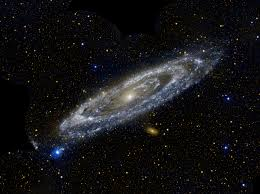
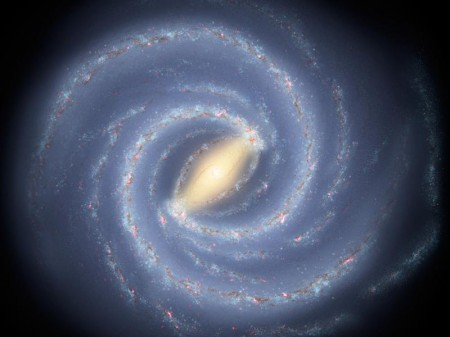
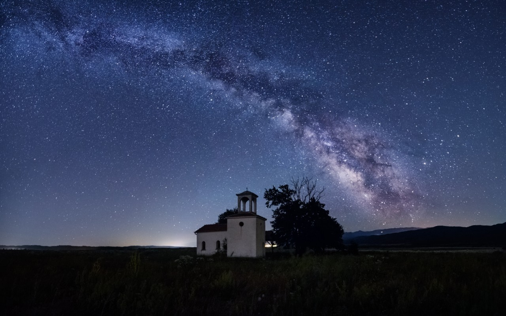

|
A Via Láctea é uma galáxia espiral, da qual o Sistema Solar faz parte. Vista da Terra, aparece como uma faixa brilhante e difusa que circunda toda a esfera celeste, recortada por nuvens moleculares que lhe conferem um intrincado aspecto irregular e recortado. Sua visibilidade é severamente comprometida pela poluição luminosa. Com poucas exceções, todos os objetos visíveis a olho nu pertencem a essa galáxia.
|
|

|
Sua idade estimada é de mais de treze bilhões de anos, período no qual passou por várias fases evolutivas até atingir sua forma atual. Formada por centenas de bilhões de estrelas, a galáxia possui estruturas diferenciadas entre si. No bojo central, que possui forma alongada, há uma grande concentração de estrelas, sendo que o exato centro da galáxia abriga um buraco negro supermassivo. Ao seu redor estende-se o disco galáctico, formado por estrelas dos mais diversos tipos, nebulosas e poeira interestelar, dentre outros. É nesta proeminente parte da Via Láctea que se manifestam os braços espirais. Ao seu redor encontram-se centenas de aglomerados globulares. Entretanto, a dinâmica de rotação da galáxia revela que sua massa é muito maior do que a de toda a matéria observável, sendo este componente adicional denominado matéria escura, cuja natureza se desconhece.
|
|

|
A Via Láctea é uma galáxia espiral barrada, formada por quatro estruturas principais. A região central caracteriza-se por um bojo alongado formado sobretudo por estrelasantigas e onde encontra-se um buraco negro supermassivo. Ao seu redor está o disco galáctico cujo diâmetro chega a aproximadamente cem mil anos-luz. Neste disco encontram-se estrelas jovens, nebulosas e regiões de formação estelar, que se organizam de forma a criar os quatro braços espirais principais da galáxia. Por fim, ao redor destas estruturas está o halo galáctico, cujos componentes mais proeminentes são os aglomerados globulares de estrelas antigas que orbitam o centro galáctico. Ao redor da galáxia existe ainda um halo de gases circundantes, além da matéria escura, que, embora indetectável diretamente, afeta sua dinâmica de rotação. A magnitude absoluta integrada da Via Láctea é de -20,6, que seria o brilho visível se toda a luz da galáxia fosse concentrada em um ponto a 32,6 anos-luz do observador.
|
Os gregos da era clássica foram os responsáveis pela criação da expressão Via Láctea, pois eles concebiam esta estrutura como um ‘Caminho de Leite’ que atravessava o Cosmos. Entre outros povos ela recebeu as mais diversas denominações. Os primitivos que ocupam o Sul do Pará, os Tembés, por exemplo, a batizaram de ‘Caminho da Anta’. Esta via tem hoje uma idade avaliada entre treze e treze bilhões e 800 milhões de anos, embora este cálculo seja um tanto controvertido.
A visão atual da Via Láctea, para a qual tem contribuído telescópios cada vez mais avançados, desde o século XVII, é a de uma parte iluminada do Universo, resultado da soma das luzes irradiadas por uma vasta quantidade de astros. Quanto mais potente for o instrumento usado para visualizá-la, maior será o número de estrelas percebidas individualmente nesta estrutura cósmica.
Não é possível até nossos dias conhecer completamente a Via-Láctea, pois, apesar de toda a moderna tecnologia espacial, ainda é difícil perceber visualmente os recantos mais distantes deste corpo. Isto ocorre porque há muita poeira ao longo deste ‘Caminho de Leite’, o que impede a percepção nítida de seu interior.
Da Via-Láctea são bem conhecidas, portanto, sua extensão e as coordenadas do Sol nesta vasta estrutura, dados estes que foram obtidos há 80 anos. As pesquisas que resultaram nesta avaliação passam pela observância dos pequenos globos estelares que estão localizados no exterior desta galáxia.
Os estudiosos determinaram também a localização do núcleo da Via-Láctea, o qual está situado na constelação de Sagitário, a qual pode ser percebida nitidamente no estado de Minas Gerais, em alguns momentos do ano. É possível distinguir nesta área tanto nebulosas quanto grupos de estrelas. Observando-se do ponto de vista do Sistema Solar do qual a Terra faz parte, pode-se encontrar nesta galáxia sua faixa mais luminosa.
Estruturalmente a Via-Láctea é composta por seis campos: núcleo, bulbo central, disco, os braços espirais, o componente esférico e o halo. A parte nuclear encontra-se no centro deste corpo, sob o formato de uma esfera achatada, constituída por astros mais velhos, revelando portanto um tom mais avermelhado se for comparada ao disco.
O bulbo, também uma esfera, está localizado em volta do núcleo; o disco é o componente mais fácil de ser visualizado nesta galáxia; são quatro os braços espirais, cada um deles assumindo uma cor diferente – ciano, violeta, verde e rosa; o componente esférico é o resultado da junção do núcleo e e do bulbo central, e só pode ser percebido indiretamente; o halo, de formato circular, cinge o componente esférico e é composto por partículas extremamente estimuladas por temperaturas muito elevadas, e também por anãs vermelhas, anãs brancas e conjuntos globulares.

Quase dois terços dos brasileiros nunca poderão ver a Via Láctea por conta da luminosidade